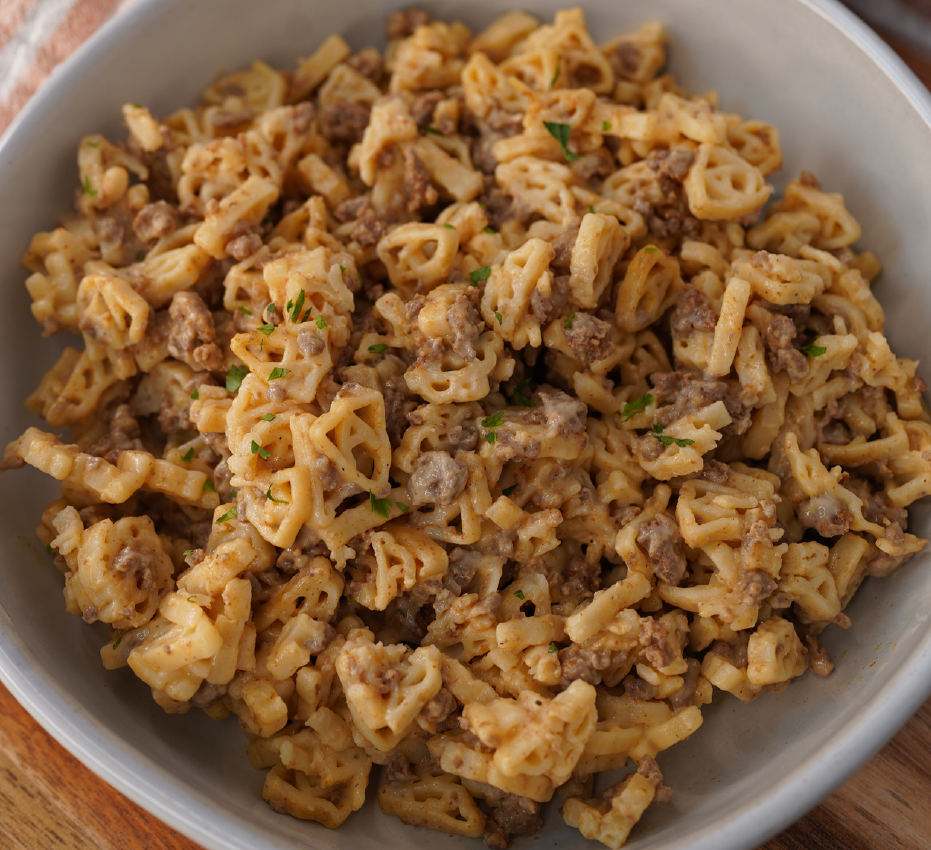

| Calories | Protein | Carbs | Fat | Fiber | Servings |
|---|---|---|---|---|---|
| 620 | 55g | 65g | 13g | 8g | 10 |
Add lots of water to a pot and bring to a boil. Add Annie’s Super Mac and cook for 9-11 minutes, stirring occasionally. Drain well and add the noodles back to the pot.
Blend 1 cup fat free cottage cheese with a dash of water (the water makes it blend more easily). Add the blended cottage cheese to the pot with the noodles and add in the powdered cheese packet that comes in the Annie’s Super Mac box.
Cook 224 grams (8 ounces) 93/7 lean ground beef with 13 grams (~1.5 tbs) low sodium taco seasoning.
Add the cooked beef to the pot and mix everything together. Divide the beefy mac into two meal prep containers if you plan to have this as meal prep.
Train With Shay Cookbook pg 347